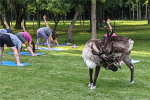
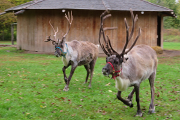
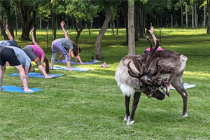
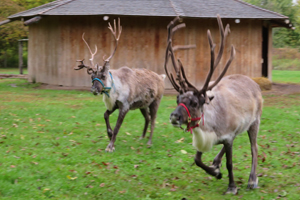

Visit Us
The Reindeer Farm is our home - we welcome guests by appointment only. Please register for a visit or event below.
Special Events

Weds. July 28 at 6 pm Yoga with the reindeer | At the farm Sign up with the instructor

Sat. Nov. 27 at 3 pm Run with the reindeer | In the village. Register at runsignup
Holiday Visits at the Farm
Join us for holiday cheer with the reindeer. From Thanksgiving to New Years we welcome guests to enjoy a visit with the reindeer. Sign up using the calendar below.
Before You Visit
After you've booked your visit to our farm Shortsville, NY, we would love to host you. However, there are some guidelines we have to make this a safe and pleasant visit for you and the reindeer.
-
PLEASE do not feed the reindeer unless the handler allows you to.
-
Our reindeer do not eat candy canes, carrots, cookies. Please do not bring them into the pen.
-
Screaming and quick movements tend to startle the reindeer. Please use inside voices around them.
-
You may pet the reindeer only under supervision of the handler.
-
When lines are long, please be considerate of others who are also waiting to see the reindeer.
-
Please don't wear boots or clothing that has been recently exposed to sheep or goats. Goats and sheep harbor an airborne virus that is deadly to the reindeer.
-
Please park in my lawn where the parking attendants request.
-
If taking pictures in the sleigh, please use the step stool and don't step on the sides of the sleigh
-
Please put all trash in the proper containers. Reindeer, like infants, are very curious and will put everything in their mouths.

How to Get to the Shortsville Reindeer Farm
We are fairly easy to get to, however, you will not see our house, barn, or reindeer from the road. We are set back off the road about 1000ft. What you WILL see is a sign at the end of the driveway "Reindeer Dr". This is the entrance to our driveway, please enter and follow the instructions of the parking attendants.
PLEASE NOTE: Our farm is our home. Please check back here or follow us on Facebook for dates and times that we welcome visitors.
 Friendly reindeer hatchlings
Friendly reindeer hatchlings
 Our barn
Our barn
 See you soon!
See you soon!

Weds. July 28 at 6 pm Yoga with the reindeer | At the farm Sign up with the instructor

Sat. Nov. 27 at 3 pm Run with the reindeer | In the village. Register at runsignup
Holiday Visits at the Farm
Join us for holiday cheer with the reindeer. From Thanksgiving to New Years we welcome guests to enjoy a visit with the reindeer. Sign up using the calendar below.
- PLEASE do not feed the reindeer unless the handler allows you to.
- Our reindeer do not eat candy canes, carrots, cookies. Please do not bring them into the pen.
- Screaming and quick movements tend to startle the reindeer. Please use inside voices around them.
- You may pet the reindeer only under supervision of the handler.
- When lines are long, please be considerate of others who are also waiting to see the reindeer.
- Please don't wear boots or clothing that has been recently exposed to sheep or goats. Goats and sheep harbor an airborne virus that is deadly to the reindeer.
- Please park in my lawn where the parking attendants request.
- If taking pictures in the sleigh, please use the step stool and don't step on the sides of the sleigh
- Please put all trash in the proper containers. Reindeer, like infants, are very curious and will put everything in their mouths.
We are fairly easy to get to, however, you will not see our house, barn, or reindeer from the road. We are set back off the road about 1000ft. What you WILL see is a sign at the end of the driveway "Reindeer Dr". This is the entrance to our driveway, please enter and follow the instructions of the parking attendants.
PLEASE NOTE: Our farm is our home. Please check back here or follow us on Facebook for dates and times that we welcome visitors.
Friendly reindeer hatchlings
Our barn
See you soon!
 Waiting for visitors
Waiting for visitors